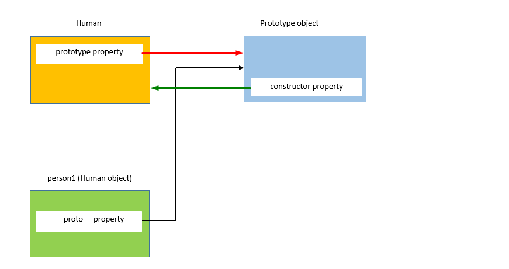

Menu
"Prototypes"
We will discuss what are prototypes in JavaScript, how they help JavaScript in achieving the concepts of Object-Oriented Programming.
Problem with creating objects with the constructor function:Consider the constructor function below:
function Human(firstName, lastName) {
this.firstName = firstName,
this.lastName = lastName,
this.fullName = function() {
return this.firstName + " " + this.lastName;
}
}
var person1 = new Human("MS", "Dhoni");
console.log(person1)
Let’s create objects person1 and person2 using the Human constructor function:
var person2 = new Human("Sachin", "Tendulkar");
var person1 = new Human("MS", "Dhoni");
On executing the above code, the JavaScript engine will create two copies of the constructor function, each for person1 and person2.

i.e. every object created using the constructor function will have its own copy of properties and methods. It doesn’t make sense to have two instances of function fullName that do the same thing. Storing separate instances of function for each object results in wastage of memory. We will see as we move forward, how we can solve this issue.
PrototypesWhen a function is created in JavaScript, the JavaScript engine adds a prototype property to the function. This prototype property is an object (called a prototype object) that has a constructor property by default. The constructor property points back to the function on which prototype object is a property. We can access the function’s prototype property using functionName.prototype.

As shown in the above image, Human constructor function has a prototype property that points to the prototype object. The prototype object has a constructor property that points back to the Human constructor function.
Let’s see an example below:
function Human(firstName, lastName) {
this.firstName = firstName,
this.lastName = lastName,
this.fullName = function() {
return this.firstName + " " + this.lastName;
}
}
var person1 = new Human("Virat", "Kohli");
console.log(person1)

To access the prototype property of the Human constructor function, use the below syntax:
console.log(Human.prototype);

As seen from the above image prototype property of the function is an object (prototype object) with two properties:
- constructor property which points to Human function itself
- __proto__ property: We will discuss this while explaining inheritance in JavaScript
When an object is created in JavaScript, JavaScript engine adds a __proto__ property to the newly created object which is called dunder proto. dunder proto or __proto__ points to the prototype object of the constructor function.
As shown in the above image, the person1 object which is created using the Human constructor function has a dunder proto or __proto__ property which points to the prototype object of the constructor function.
//Create an object person1 using the Human constructor function
var person1 = new Human("Virat", "Kohli");

As can be seen from the above image, both person1’s dunder proto or __proto__ property and Human.prototype property is equal. Let’s check if they point at the same location using === operator
Human.prototype === person1.__proto__ //true
This shows that person1’s dunder proto property and Human.prototype are pointing to the same object. Now, let’s create another object person2 using the Human constructor function
var person2 = new Human("Sachin", "Tendulkar");
console.log(person2);
Above console output shows that even person2’s dunder proto property is equal to the Human.prototype property and they point to the same object.
Human.prototype === person2.__proto__ //true
person1.__proto__ === person2.__proto__ //true
Above statement proves that the person1’s and person2’s dunder proto properties point to Human constructor function’s prototype object.

The prototype object of the constructor function is shared among all the objects created using the constructor function.
Prototype ObjectAs a prototype object is an object, we can attach properties and methods to the prototype object. Thus, enabling all the objects created using the constructor function to share those properties and methods. The new property can be added to the constructor function’s prototype property using either the dot notation or square bracket notation as shown below:
//Dot notation
Human.prototype.name = "Ashwin";
console.log(Human.prototype.name)//Output: Ashwin
//Square bracket notation
Human.prototype["age"] = 26;
console.log(Human.prototype["age"]); //Output: 26
console.log(Human.prototype);

name and age properties have been added to the Human prototype
//Create an empty constructor function
function Person(){
}
//Add property name, age to the prototype property of the Person constructor function
Person.prototype.name = "Ashwin" ;
Person.prototype.age = 26;
Person.prototype.sayName = function(){
console.log(this.name);
}
//Create an object using the Person constructor function
var person1 = new Person();
//Access the name property using the person object
console.log(person1.name)// Output" Ashwin
Let’s analyze what happened when we did console.log(person.name). Let’s check if the person object has a name property
console.log(person1);
As we can see that person1 object is empty and it does not have any property except its
dunder proto property. So how
does the output of console.log(person.name) was Ashwin?
When we try to access a property of an object, the JavaScript engine first tries to find the
property on the object, if
the property is present on the object it outputs its value. But, if the property is not
present on the object then it
tries to find the property on the prototype object or dunder proto of the object. If the
property is found the value is
returned else JavaScript engine tries to find the property on the dunder proto of the
object. This chain continues until
the dunder proto property is null. In these cases, the output will be undefined.
So, when person1.name is called, JavaScript engine checks if the property exists on the person1 object. In this case, name property was not on the person1’s object. So, now JavaScript engine checks if the name property exists on the dunder proto property or the prototype of the person1’s object. In this case, name property was there on the dunder proto property or the prototype of person1’s object. Hence, the output was returned Ashwin.
Let’s create another object person2 using the Person constructor function.
var person2 = new Person();
//Access the name property using the person2 object
console.log(person2.name)// Output: Ashwin
Now, let’s define a property name on the person1 object
person1.name = "Anil"
console.log(person1.name)//Output: Anil
console.log(person2.name)//Output: Ashwin
Here person1.name outputs “Anil”. As mentioned earlier, the JavaScript engine first tries to find the property on the object itself. In this case, name property is present on the object person1 itself, hence JavaScript engines outputs the value of name property of person1. In the case of person2, the name property is not present on the object. Hence, it outputs person2’s prototype object’s property name.
Problems with the prototypeAs prototype object is shared among all the objects created using the constructor function, its properties and methods are also shared among all the objects. If an object A modifies a property of the prototype having primitive value, other objects will not get affected by, as object A will create a property on its objects as shown below.
console.log(person1.name);//Output: Ashwin
console.log(person2.name);//Output: Ashwin
person1.name = "Ganguly"
console.log(perosn1.name);//Output: Ganguly
console.log(person2.name);//Output: Ashwin
form the above code (line 1 and 2), both person1 and person2 does not have name property, hence they access the prototypes name property and hence the output is same for both.
When person1 want to have a different value for the name property, it creates a name property on its object.
Consider another example to display the issue with prototypes when the prototype object contains a property of reference type
//Create an empty constructor function
function Person(){
}
//Add property name, age to the prototype property of the Person constructor function
Person.prototype.name = "Ashwin" ;
Person.prototype.age = 26;
Person.prototype.friends = ['Jadeja', 'Vijay'],//Arrays are of reference type in JavaScript
Person.prototype.sayName = function(){
console.log(this.name);
}
//Create objects using the Person constructor function
var person1= new Person();
var person2 = new Person();
//Add a new element to the friends array
person1.friends.push("Amit");
console.log(person1.friends);// Output: "Jadeja, Vijay, Amit"
console.log(person2.friends);// Output: "Jadeja, Vijay, Amit"
In the above example, person1 and person2 point to the same friends' array of the prototype
object. person1 modifies
friends property by adding another string in the array.
As friends' array exists on Person.prototype, not on person1, the changes made in the
friend’s property by person1
object is reflected on person2.friends also (which points to the same array).
If the intention is to have an array shared by all instances, then this outcome is okay. But
here this was not the case.
To solve the problems with the prototype and the problems with the constructor, we can combine both the constructor and function.
- Problem with the constructor function: Every object has its own instance of the function
- Problem with the prototype: Modifying a property using one object reflects the other object also
To solve both problems, we can define all the object-specific properties inside the constructor and all shared properties and methods inside the prototype as shown below:
//Define the object specific properties inside the constructor
function Human(name, age){
this.name = name,
this.age = age,
this.friends = ["Jadeja", "Vijay"]
}
//Define the shared properties and methods using the prototype
Human.prototype.sayName = function(){
console.log(this.name);
}
//Create two objects using the Human constructor function
var person1 = new Human("Virat", 31);
var person2 = new Human("Sachin", 40);
//Lets check if person1 and person2 have points to the same instance of the sayName function
console.log(person1.sayName === person2.sayName) // true
//Let's modify friends property and check
person1.friends.push("Amit");
console.log(person1.friends)// Output: "Jadeja, Vijay, Amit"
console.log(person2.friends)//Output: "Jadeja, Vijay"
Here as we have wanted each object to have their own name, age, and friends property. Hence,
we have defined these
properties inside the constructor using this. However, as sayName is defined on the
prototype object, it will be shared
among all the objects.
In the above example, the friend’s property of person2 did not change on changing the
friends' property of person1.
 Thanks for reading...
Thanks for reading...